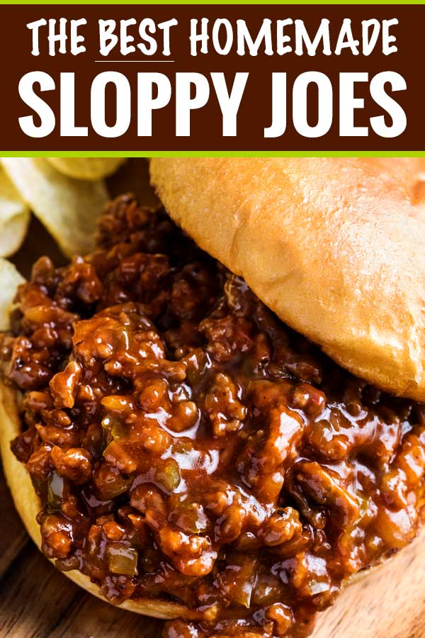

Sloppy Joes

Step away from the canned sauce and give these homemade sloppy joes a try! They’re truly the best version of a childhood favorite!
As we head into the upcoming holiday season, I’ve been thinking about family-friendly meals. You know, those meals that your kids always want to eat. In our house, this Creamy Baked Mac and Cheese is number one on our list… with these sloppy joes being number 2! With two little ones myself, I know ALL too well how frustrating it is to cook a meal and have them promptly turn up their noses and say it’s “gross”. *facepalm*
Ingredients
- 1 Tbsp butter
- 1 tsp olive oil
- 1 lb. ground beef
- 1/3 green bell pepper, minced
- 1/2 large yellow onion, minced
- 3 cloves garlic, minced
- 1 Tbsp tomato paste
- 2/3 cup ketchup
- 1/3 cup water
- 1 Tbsp brown sugar (or less, if you prefer)
- 1 tsp yellow mustard
- 3/4 tsp chili powder
- 1/2 tsp Worcestershire sauce
- 1/2 tsp kosher salt
- 1/4 tsp red pepper flakes (optional)
- 1/4 tsp black pepper
- dash of hot sauce (optional)
Steps
- Heat butter and oil in large skillet over MED/MED-HIGH heat. Add beef and brown, breaking apart into crumbles as it cooks, about 5 minutes. Transfer to colander to drain.
- Add onion and bell pepper to same skillet and cook 2-3 minutes, until soft. Add garlic and cook 30 seconds or so, until fragrant. Add beef back to the skillet and add tomato paste. Stir well.
- Add ketchup, water, brown sugar, mustard, chili powder, Worcestershire sauce, salt, red pepper flakes (if using), and black pepper. Stir well to combine.
- Cook over MED heat for 10-15 minutes, until mixture has thickened to your liking. Remove from heat and serve over toasted buns.